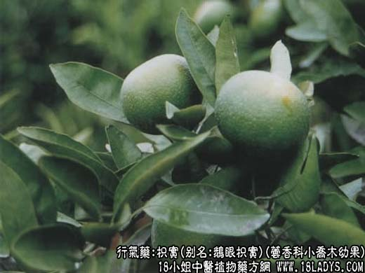
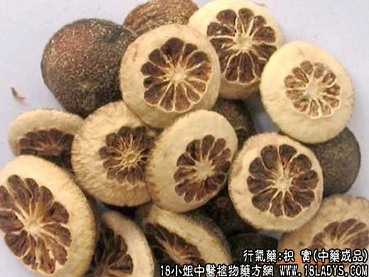

【中药概述】
枳实，别名：鹅眼枳实，为芸香科小乔木植物酸橙的幼果。苦、辛，微寒。归脾、胃、大肠经。
1．行气除胀：用于积滞内停，腹满胀痛，便秘、以及泻痢后重，如（大承气汤）、（<内外伤辨惑论>枳实导滞丸、枳术丸）。
2．化痰开痹：用于胸胁痰饮，痞满不适，如（<济生方>导痰汤）、（枳实理中丸）。
3．消积导滞：用于胃下垂、脱肛、子宫脱垂。可与黄芪，升麻等同用。
【药物形态】
本品呈半球形，少数为球形，直径0.5～2.5cm。外果皮黑绿色或暗棕绿色，具颗粒状突起和皱纹，有明显的花柱残迹或果梗痕。切面中果皮略隆起，厚0.3～1.2cm，黄白色或黄褐色，边缘有1～2列油室，瓤囊棕褐色。质坚硬。气清香，味苦、微酸。
【药效鉴别】
枳实破气结的作用很强，对气结而成的坚积，用枳实破其气结，气行则积消；因气结而痰阻者，用枳实破其气结，气行则痰行；由于气结而胸脘痞闷、胸痛者，用枳实破其气结，则痞闷自除。
【临证应用】
1.（内外伤辨惑论<枳术丸>白术60g，枳实30g，为末为丸）健脾消痞，饮食停滞而致脘腹痞痛，不思饮食；
2.（<温病条辨>小结胸加枳实汤），用于阳明暑温，水结在胸，面赤身热头晕，渴欲凉饮，得水则呕，按之胸下痛。
【药理作用】
1.煎剂对结核杆菌有抑制作用。
2.有健胃作用。
【用量用法】
3——15g，水煎服，或入剂。
【使用注意】
脾胃虚弱及孕妇慎用。
本文解释权归中药名称大全，本文地址https://www.daquan.com/post/1970.html